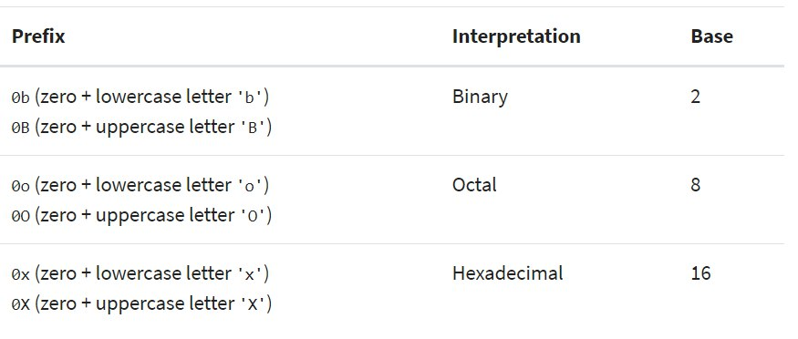

Basic Data Types in Python
Here’s what you’ll learn in this tutorial:
- You’ll learn about several basic numeric, string, and Boolean types that are built into Python. By the end of this tutorial, you’ll be familiar with what objects of these types look like, and how to represent them.
Integers
Integers don’t have decimal points but can be positive, negative, or zero.
In Python 3, there is effectively no limit to how long an integer value can be. Of course, it is constrained by the amount of memory your system has, as are all things, but beyond that an integer can be as long as you need it to be:
print(123123123123123123123123123123123123123123123123 + 1)
#output>> 123123123123123123123123123123123123123123123124Python interprets a sequence of decimal digits without any prefix to be a decimal number:
print(10)
#output>> 10The following strings can be prepended to an integer value to indicate a base other than 10:
print(0o10)
#output>> 8
print(0x10)
#output>> 16
print(0b10)
#output>> 2
For more information on integer values with non-decimal bases, see the following Wikipedia sites: Binary, Octal, and Hexadecimal.
Floating-Point Numbers
Fractional numbers are expressed using numbers before and after a decimal point using the float type. Like integers, these numbers can be positive or negative. You don’t have to do anything particularly special to assign a float to a variable; if you use a decimal point in the number, Python will assume that it’s a float.
muscle = 2.9
brainz = -13.678
speed = 0.0if the part after the decimal point is zero, the number is considered to be a float. Floats can be manipulated using the same operators as integers, returning any fractional part as well.
Complex Numbers
Complex numbers are specified as <real part>+<imaginary part>j. For example:
>>> 2+3j
(2+3j)
>>> type(2+3j)
<class 'complex'>Strings
Strings are sequences of character data. The string type in Python is called str.
String literals may be delimited using either single or double quotes. All the characters between the opening delimiter and matching closing delimiter are part of the string:
>>> print("I am a string.")
I am a string.
>>> type("I am a string.")
<class 'str'>
>>> print('I am too.')
I am too.
>>> type('I am too.')
<class 'str'>Boolean Type, Boolean Context, and “Truthiness”
Python 3 provides a Boolean data type. Objects of Boolean type may have one of two values, True or False:
>>> type(True)
<class 'bool'>
>>> type(False)
<class 'bool'>As you will see in upcoming tutorials, expressions in Python are often evaluated in Boolean context, meaning they are interpreted to represent truth or falsehood. A value that is true in Boolean context is sometimes said to be “truthy,” and one that is false in Boolean context is said to be “falsy.” (You may also see “falsy” spelled “falsey.”)
The “truthiness” of an object of Boolean type is self-evident: Boolean objects that are equal to True are truthy (true), and those equal to False are falsy (false). But non-Boolean objects can be evaluated in Boolean context as well and determined to be true or false.